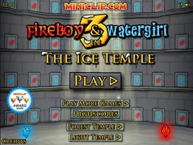
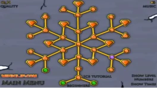

| Főoldal |
|---|
| Erdei templom |
| Fény templom |
| Jég templom |
| Kristály templom |
| Kvíz oldal |
| Kontakt oldal |
A Fireboy és Watergirl 3 in The Ice Temple-ben a sorozat harmadik játéka.
A megjelenés dátuma 2012. április 5. volt.
A főmenü:

37 szint van, amelyek 20 normál szintből, 6 egyidejűleg tervezett szintből és 11 fehér gyémánt szintből állnak. Normál szinten különféle rejtvényeket kell megoldani, mint például karok, nyomók, dobozok, fényérzékelők és tükrök, az újonnan bevezetett jég/hó és fagyasztó/olvasztó lámpák stb. és néhány gyémánt, amit össze kell gyűjteni, bár nem szükséges a szintet teljesítéséhez, ez növeli a minősítést a végén. Az egyidejűleg tervezett pályákon mindkét karaktert egyszerre kell szimmetrikusan mozgatni, általában nincs sok rejtvény és csak akadályok vannak. A fehér gyémánt pályán csak egy gyémánt van, amelyet össze kell gyűjteni a szint átjutásához, nagyjából ugyanaz, mint egy normál szint, de csak egy gyémánt szükséges a szint teljesítéséhez.
A szint kiválasztása:

Fireboy csúszik jégen és havon, de nem tud felmászni a havas lejtőkre. Watergirl-t lelassítja a jég és a hó, de fel tud mászni a havas lejtőkön.